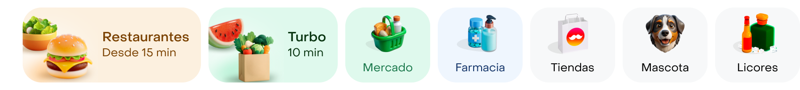
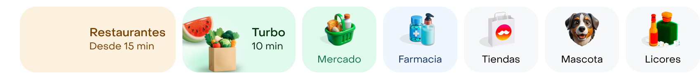
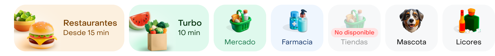
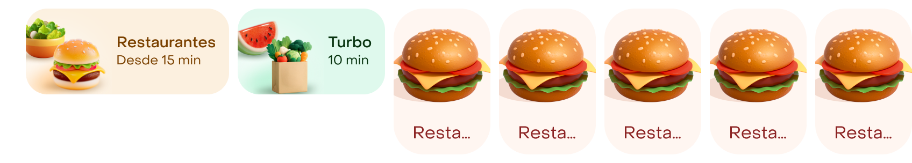

Horizontal matrix layout
Fila con scroll horizontal que agrupa los accesos a las verticales de Rappi: 2 chips promocionales grandes y una serie de tiles de tienda.
Resumen
Contenedor de layout, no un átomo. Ordena instancias de _horizontal-matrix-atoms (chips) y _vertical-matrix-atoms (tiles) en una sola fila desplazable.
Cuándo usarlo
- Como punto de entrada a las verticales en el home, arriba del feed.
- Cuando hay 2 verticales destacadas (con artwork y ETA) más un set corto de verticales secundarias.
Cuándo no
- Para listar tiendas o productos dentro de una vertical.Usa: Cards o listas de tiendas
- Para filtrar resultados de una búsqueda.Usa: Filters / Chips
- Con más de 7 elementos: el último queda fuera de vista y pierde descubrimiento.Usa: Pantalla de "Ver más" (state=seeMore)
Anatomía

| # | Elemento | Notas |
|---|---|---|
| 1 | _horizontal-matrix-atoms | Chip promocional Rest: artwork 3D, título y ETA. |
| 2 | _horizontal-matrix-atoms | Chip promocional Turbo: artwork de mercado y ETA más corto. |
| 3–7 | _vertical-matrix-atoms | Tile de tienda: artwork 56px arriba y caption abajo. Se repite 5 veces. |
Ejemplos
01Fila por defecto
| Prop | Valor | Notas |
|---|---|---|
horizontalMatrixItems | rest, turbo | Valores por defecto. |
verticalMatrixItems | 5 × secondary / image | — |
02Primer chip cargando

| Prop | Valor | Notas |
|---|---|---|
horizontalMatrixItems[0].status | loading | Desaparece el artwork; el texto se mantiene. |
03Tile no disponible

| Prop | Valor | Notas |
|---|---|---|
verticalMatrixItems[2].state | not-available | Tercer tile (Tiendas). |
04Tiles primary

| Prop | Valor | Notas |
|---|---|---|
verticalMatrixItems | 5 × primary / image | Sobreescribe el default contextual secondary. La fila crece de 96 a 152px. |
Las filas tienen scroll horizontal, igual que en el producto.
Do / Don’t
Pendientes
Problemas encontrados al documentar. Se resuelven en Figma, no en esta página.
- altaAl pasar un tile a not-available, el artwork vuelve al de Mercado (en el ejemplo, "Tiendas" muestra la canasta). Cambiar de estado pierde el override del artwork.
- altaAl pasar los tiles a type=primary se pierden label y artwork: los 5 muestran la hamburguesa y "Resta…".
- mediaLos fondos y textos usan colors/chart/*, una paleta de visualización de datos, en vez de tokens de superficie. Además conviven con colors/background/mild en la misma fila.
- mediaEl estado loading del chip solo oculta el artwork: no hay shimmer ni indicador, y se lee como imagen rota.
- mediaPadding vertical de la fila (8), gap interno del chip (4) y padding final (12) no están enlazados a tokens.
- bajaLa capa de texto se llama "Mercado" en los 5 tiles.
- bajaValores de enum inconsistentes entre Figma y código: guion (not-available), espacio (see more) y camelCase (notAvailable).
Todavía no hay implementación en código documentada para este componente.
Accesibilidad
| Tema | Regla |
|---|---|
| Rol | La fila se anuncia como lista ("7 elementos"). Cada chip o tile es un botón. |
| Nombre accesible | Título + subtítulo en chips ("Restaurantes, desde 15 min"); label en tiles. El artwork es decorativo y no se anuncia. |
| Estados | not-available y temporarily-closed se anuncian ("Tiendas, no disponible") y quedan deshabilitados. loading y skeleton marcan la fila como ocupada. |
| Área táctil | Tile de 90 × 80 y chip de 80 de alto: cumplen el mínimo de 48 × 48. |
| Contraste | Validar el texto de los chips sobre los fondos colors/chart/*-01 y el label atenuado de not-available. caption-2 es el tamaño mínimo: no bajarlo. |
API
| Prop | Valores | Default | Notas |
|---|---|---|---|
horizontalMatrixItems | HorizontalMatrixAtomItem[] | — | Chips en orden (Rest, Turbo). En Figma: 2 × _horizontal-matrix-atoms. |
verticalMatrixItems | VerticalMatrixAtomItem[] | — | Tiles de tienda. En Figma: 5 × _vertical-matrix-atoms. |
horizontalGap | token | spacing/ | Espacio entre todos los elementos de la fila. |
contentPaddingStart | token | spacing/ | Margen inicial de la fila con scroll. |
Chip horizontal · _horizontal-matrix-atoms
| Prop | Valores | Default | Notas |
|---|---|---|---|
status | default, skeleton, loading, placeholder, not-available, open-soon | default | En Figma los valores usan guion (not-available, open-soon). |
storetype | rest, turbo | rest | Define fondo, artwork y copy por defecto. |
title | string | — | Línea principal. Suele venir del storetype. |
subtitle | string | — | Línea secundaria (ej. ETA). |
Tile vertical · _vertical-matrix-atoms
Dentro de esta fila el default es secondary. Suelto, el component set arranca en primary + image.
| Prop | Valores | Default | Notas |
|---|---|---|---|
type | primary, secondary | secondary | Default contextual en esta fila. |
state | image, not-available, temporarily-closed, placeholder, skeleton, see more | image | En Figma mezcla guion y espacio (see more). |
label | string | — | Caption del tile. Hoy la capa se llama "Mercado" en todos: se sobreescribe por instancia. |
Estructura
| Elemento | Propiedad | Valor | Token |
|---|---|---|---|
| Fila | Dirección | Horizontal, scroll | Sin token |
| Fila | Gap | 8 | spacing/ |
| Fila | Padding inicial | 24 | spacing/ |
| Fila | Padding vertical | 8 | Sin token |
| Fila | Alto | 96 (secondary) · 152 (primary) | Sin token |
| Chip | Artwork | 80 × 80 | Sin token |
| Chip | Gap interno / padding final | 4 / 12 | Sin token |
| Tile | Tamaño | 90 × 80 | Sin token |
| Tile | Artwork | 56 × 56 | Sin token |
| Tile | Padding inferior | 8 | spacing/ |
Dependencias
Lo que este componente necesita de otras librerías para existir.
| Pieza | Tipo | Librería | Para qué |
|---|---|---|---|
_horizontal-matrix-atoms | Componente (set) | Por confirmar | Chips Rest y Turbo |
_vertical-matrix-atoms | Componente (set) | Por confirmar | Tiles de tienda |
Artwork 3D de verticales | Componentes sueltos (shop, pharmacy…) | Por confirmar | Ilustración 56px de cada tile |
Tokens Colors Typography | Colecciones de variables | Foundations | Color, spacing y tipografía |
Tokens
Todo en token semántico. Las etiquetas marcan lo que hay que revisar antes de dar el componente por cerrado.
| Token | Rol | Colección |
|---|---|---|
spacing/ | Gap de la fila | Tokens |
spacing/ | Padding inicial de la fila | Tokens |
spacing/ | Padding inferior del tile | Tokens |
colors/Paleta de datos | Fondo del chip Rest | Tokens |
colors/Paleta de datos | Texto del chip Rest | Tokens |
colors/Paleta de datos | Fondo del chip Turbo y del tile Mercado | Tokens |
colors/ | Texto del chip Turbo | Tokens |
colors/Paleta de datos | Texto del tile Mercado | Tokens |
colors/Paleta de datos | Fondo del tile Farmacia | Tokens |
colors/Paleta de datos | Texto del tile Farmacia | Tokens |
colors/ | Fondo de tiles neutros (Tiendas, Mascota, Licores) | Tokens |
ink/ | Texto de tiles neutros | Colors |
font/ | Familia de todo el texto | Typography |
font/ font/ font/ | Título del chip | Typography |
font/ font/ font/ | ETA del chip y caption del tile | Typography |
Artwork
| Componente | Dónde |
|---|---|
shop | Tile Mercado |
pharmacy | Tile Farmacia |
stores-new | Tile Tiendas |
pets-new | Tile Mascota |
whisky-new | Tile Licores |
Fuente. uSpec: frames API (6:220) y Anatomy (18:239) · Figma MCP: estructura, instancias anidadas y variables enlazadas. Capturado el 2026-10-01. Piloto. El contrato no salió del plugin uSpec Extract (_base.json); se armó con el MCP de Figma siguiendo la misma forma. En producción, reemplazar por la salida de create-component-md.